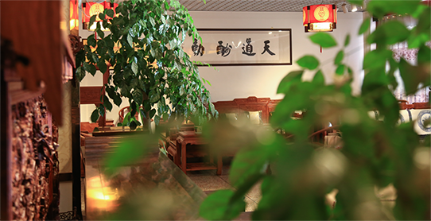

关于我们


浙江东阳市东源红木家具有限公司成立于2011年，是一家专门生产、经营、销售红木家具的生产型企业，位于东阳市南马镇机械工业园，占地面积10余亩，现有职工100余人。2014年，该公司在国家工商总局注册了专有商标：东源红。
浙江东阳东源红木家具有限公司自成立以来，坚持以市场为导向，以消费者的需求为生产的最高目的，最近几年，连续取得不俗的销售佳绩。总经理施青岭是木工出身，自上个世纪90年代起至今一直从事硬木家具生产，积累了丰富的红木家具生产经验。公司所生产的红木家具在行业内素有“工艺精良、款式经典、雕刻精致、型美料足”等美誉。
最近，该公司根据市场需求，专门开发了缅甸花梨系列、非洲花梨系列等产品。其生产的书房系列、客厅系列、卧室系列、餐厅系列产品，深受消费者的喜爱，行销浙江、江苏、河南、湖南、湖北等省市，已成为南方消费者购买红木家具的主要选择。
